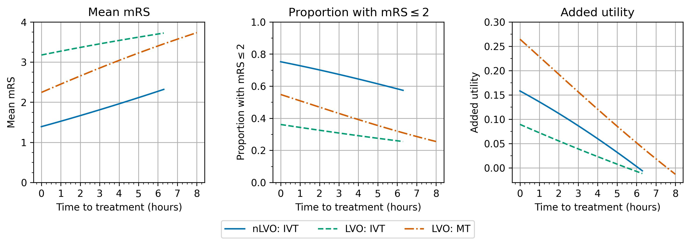

Demonstration of added utility depending on time to IVT and MT#
In this notebook we examine the relationship between time to treatment and the effect of treatment.
Plain English summary#
Generally we expect a patient’s outcome after stroke to depend on how quickly they were treated. The longer between the start of the stroke and the treatment, the less benefit there will be from the treatment.
This document creates a series of graphs to show how the expected benefits vary with time. We first look at the change in added utility, change in average mRS, and change in proportion of patients with an mRS score of two or less. We find how these vary with time to treatment for separate stroke type and treatment combinations.
Then we consider the case where patients receive both IVT and MT. We create a grid of treatment times so we can pick out any combination of time to IVT and time to MT on the grid. On this grid we show the expected change in added utility and in average mRS at any combination of treatment times.
We also combine all of the different combinations of stroke type and treatment type into one big grid of outcomes so that we can see the effect of time to treatment on the whole population.
Aims#
To create a line graph of changing outcome with time for each stroke type and treatment type combination.
To create a grid of changing outcomes with time for every combination of treatment times for both treatments.
Method#
We set up a series of treatment times running from 0 minutes after onset to the time of no effect.
For IVT, times run from 0 to 6.3 hours (378 minutes) in steps of 10 minutes
For MT, times run from 0 to 8 hours (480 minutes) in steps of 10 minutes
Individual treatment effects
First, we feed these times into the stroke outcome model and calculate the outcomes for each treatment type separately. We then plot the changing outcome with increasing time.
Outcome matrix
We then combine these into a grid of treatment times so that any pair of time to IVT and time to MT can be picked.
All of these treatment time combinations can then be fed into the stroke outcome model to calculate the outcomes after treatment at those times. This builds up a grid of outcomes at any pair of treatment times.
Outcome results are calculated for four patient groups:
nLVO receiving IVT
LVO receiving IVT only
LVO receiving MT only
LVO receiving both IVT and MT
And the outcome types shown here are:
Added utility compared with no treatment
Shift in mean mRS compared with no treatment
We then use the standard patient population to combine the four patient groups into the outcomes after treatment for the whole population.
Load packages#
import matplotlib.pyplot as plt
import matplotlib.ticker as ticker # for axis tick locations
import numpy as np
import pandas as pd
import copy
import os
from stroke_outcome.continuous_outcome import Continuous_outcome
import warnings
warnings.filterwarnings("ignore")
from geography_calc import create_outcome_model_inputs, run_outcome_model, combine_outcomes_treated_ischaemic, combine_outcomes_lvo
dir_output = 'output'
dir_images = 'images'
Set up model#
# Set up outcome model
outcome_model = Continuous_outcome()
Individual treatment effects#
Here we consider the impact, and effect of time to treatment, for three cohorts independently:
nLVO receiving IVT
LVO receiving IVT only
LVO receiving MT (data based on trails where 85% had also received IVT)
Set up shared treatment times:
max_time_to_ivt = 6.3 * 60 # minutes
max_time_to_mt = 8.0 * 60 # minutes
t_step = 1 # minutes
treatment_times_ivt = np.arange(0.0, max_time_to_ivt + t_step, t_step)
treatment_times_mt = np.arange(0.0, max_time_to_mt + t_step, t_step)
Create a dataframe for each cohort:
df_patients_nlvo_ivt = pd.DataFrame()
df_patients_nlvo_ivt['onset_to_needle_mins'] = treatment_times_ivt
df_patients_nlvo_ivt['onset_to_puncture_mins'] = treatment_times_ivt
df_patients_nlvo_ivt['stroke_type_code'] = 1
df_patients_nlvo_ivt['ivt_chosen_bool'] = 1
df_patients_nlvo_ivt['mt_chosen_bool'] = 0
df_patients_nlvo_ivt['label'] = 'nlvo_ivt'
df_patients_lvo_ivt = pd.DataFrame()
df_patients_lvo_ivt['onset_to_needle_mins'] = treatment_times_ivt
df_patients_lvo_ivt['onset_to_puncture_mins'] = treatment_times_ivt
df_patients_lvo_ivt['stroke_type_code'] = 2
df_patients_lvo_ivt['ivt_chosen_bool'] = 1
df_patients_lvo_ivt['mt_chosen_bool'] = 0
df_patients_lvo_ivt['label'] = 'lvo_ivt'
df_patients_lvo_mt = pd.DataFrame()
df_patients_lvo_mt['onset_to_needle_mins'] = treatment_times_mt
df_patients_lvo_mt['onset_to_puncture_mins'] = treatment_times_mt
df_patients_lvo_mt['stroke_type_code'] = 2
df_patients_lvo_mt['ivt_chosen_bool'] = 0
df_patients_lvo_mt['mt_chosen_bool'] = 1
df_patients_lvo_mt['label'] = 'lvo_mt'
Combine the groups into one dataframe:
df_patients = pd.concat(
(df_patients_nlvo_ivt, df_patients_lvo_ivt, df_patients_lvo_mt),
ignore_index=True
)
df_patients
| onset_to_needle_mins | onset_to_puncture_mins | stroke_type_code | ivt_chosen_bool | mt_chosen_bool | label | |
|---|---|---|---|---|---|---|
| 0 | 0.0 | 0.0 | 1 | 1 | 0 | nlvo_ivt |
| 1 | 1.0 | 1.0 | 1 | 1 | 0 | nlvo_ivt |
| 2 | 2.0 | 2.0 | 1 | 1 | 0 | nlvo_ivt |
| 3 | 3.0 | 3.0 | 1 | 1 | 0 | nlvo_ivt |
| 4 | 4.0 | 4.0 | 1 | 1 | 0 | nlvo_ivt |
| ... | ... | ... | ... | ... | ... | ... |
| 1234 | 476.0 | 476.0 | 2 | 0 | 1 | lvo_mt |
| 1235 | 477.0 | 477.0 | 2 | 0 | 1 | lvo_mt |
| 1236 | 478.0 | 478.0 | 2 | 0 | 1 | lvo_mt |
| 1237 | 479.0 | 479.0 | 2 | 0 | 1 | lvo_mt |
| 1238 | 480.0 | 480.0 | 2 | 0 | 1 | lvo_mt |
1239 rows × 6 columns
Calculate outcomes:
outcome_model.assign_patients_to_trial(df_patients)
# Calculate outcomes:
patient_data_dict, outcomes_by_stroke_type, full_cohort_outcomes = (
outcome_model.calculate_outcomes())
# Make a copy of the results:
outcomes_by_stroke_type = copy.copy(outcomes_by_stroke_type)
full_cohort_outcomes = copy.copy(full_cohort_outcomes)
Place the relevant results into the starting dataframe:
df_patients['added_utility'] = full_cohort_outcomes['each_patient_utility_shift']
df_patients['mean_mrs'] = full_cohort_outcomes['each_patient_mrs_post_stroke']
df_patients['mrs_less_equal_2'] = full_cohort_outcomes['each_patient_mrs_dist_post_stroke'][:, 2]
df_patients
| onset_to_needle_mins | onset_to_puncture_mins | stroke_type_code | ivt_chosen_bool | mt_chosen_bool | label | added_utility | mean_mrs | mrs_less_equal_2 | |
|---|---|---|---|---|---|---|---|---|---|
| 0 | 0.0 | 0.0 | 1 | 1 | 0 | nlvo_ivt | 0.158130 | 1.391000 | 0.752000 |
| 1 | 1.0 | 1.0 | 1 | 1 | 0 | nlvo_ivt | 0.157768 | 1.393199 | 0.751600 |
| 2 | 2.0 | 2.0 | 1 | 1 | 0 | nlvo_ivt | 0.157405 | 1.395401 | 0.751199 |
| 3 | 3.0 | 3.0 | 1 | 1 | 0 | nlvo_ivt | 0.157042 | 1.397603 | 0.750797 |
| 4 | 4.0 | 4.0 | 1 | 1 | 0 | nlvo_ivt | 0.156678 | 1.399808 | 0.750396 |
| ... | ... | ... | ... | ... | ... | ... | ... | ... | ... |
| 1234 | 476.0 | 476.0 | 2 | 0 | 1 | lvo_mt | -0.011106 | 3.722407 | 0.257007 |
| 1235 | 477.0 | 477.0 | 2 | 0 | 1 | lvo_mt | -0.011625 | 3.725058 | 0.256505 |
| 1236 | 478.0 | 478.0 | 2 | 0 | 1 | lvo_mt | -0.012144 | 3.727707 | 0.256002 |
| 1237 | 479.0 | 479.0 | 2 | 0 | 1 | lvo_mt | -0.012662 | 3.730355 | 0.255501 |
| 1238 | 480.0 | 480.0 | 2 | 0 | 1 | lvo_mt | -0.013180 | 3.733000 | 0.255000 |
1239 rows × 9 columns
Plot outcomes with time#
The following function plots the outcomes with time.
from plot_matrix import plot_outcomes_with_time
Setup for plot:
# First three colours of seaborn colourblind:
colours = ['#0072B2', '#009E73', '#D55E00']
linestyles = ['-', '--', '-.']
# Set up axis conversion between minutes and hours:
use_hours=True
if use_hours:
unit_str = 'hours'
x_times_scale = (1.0 / 60.0)
xtick_max = (max_time_to_mt+1)/60.0
major_step = 1
minor_step = (15.0/60.0) # 15 minutes
else:
unit_str = 'minutes'
x_times_scale = 1.0
xtick_max = max_time_to_mt+1
major_step = 60.0
minor_step = 15.0
# Data setup:
# The order of the keys in these dictionaries
# sets up which outcome goes in which axis, and
# which cohort uses each colour and linestyle.
# The value for each key is the prettier label to be displayed.
outcome_labels = {
'mean_mrs': 'Mean mRS',
'mrs_less_equal_2': r'Proportion with mRS$\leq$2',
'added_utility': 'Added utility',
}
cohort_labels = {
'nlvo_ivt': 'nLVO: IVT',
'lvo_ivt': 'LVO: IVT',
'lvo_mt': 'LVO: MT',
}
Plotting:
plot_outcomes_with_time(
df_patients,
outcome_labels,
cohort_labels,
x_times_scale,
colours,
linestyles,
unit_str,
major_step,
minor_step,
savename = './images/time_to_treatment.jpg'
)
Save a copy of the data behind the figure:
df_patients.to_csv(os.path.join(dir_output, 'mean_outcomes_with_time.csv'), index=False)
Create a grid of treatment times#
Use these treatment times:
t_step = 10
time_to_ivt = np.arange(0, max_time_to_ivt + 1, t_step)
time_to_mt = np.arange(0, max_time_to_mt + 1, t_step)
Mesh the two sets of times to get a grid of every combination of times in the two lists:
times_to_ivt_grid, times_to_mt_grid = np.meshgrid(time_to_ivt, time_to_mt)
Flatten the grids back into a column of data and store in this DataFrame:
df_patients_grid = pd.DataFrame()
df_patients_grid['onset_to_needle_mins'] = times_to_ivt_grid.flatten()
df_patients_grid['onset_to_puncture_mins'] = times_to_mt_grid.flatten()
Set up separate grids for each cohort#
Each cohort uses the same grid of treatment times with different stroke and treatment types:
dict_df_patients = create_outcome_model_inputs(df_patients_grid)
for key, df in dict_df_patients.items():
print(key)
display(df.head(2))
nlvo_ivt
| onset_to_needle_mins | onset_to_puncture_mins | stroke_type_code | ivt_chosen_bool | mt_chosen_bool | |
|---|---|---|---|---|---|
| 0 | 0.0 | 0.0 | 1 | 1 | 0 |
| 1 | 10.0 | 0.0 | 1 | 1 | 0 |
lvo_ivt_only
| onset_to_needle_mins | onset_to_puncture_mins | stroke_type_code | ivt_chosen_bool | mt_chosen_bool | |
|---|---|---|---|---|---|
| 0 | 0.0 | 0.0 | 2 | 1 | 0 |
| 1 | 10.0 | 0.0 | 2 | 1 | 0 |
lvo_ivt_mt
| onset_to_needle_mins | onset_to_puncture_mins | stroke_type_code | ivt_chosen_bool | mt_chosen_bool | |
|---|---|---|---|---|---|
| 0 | 0.0 | 0.0 | 2 | 1 | 1 |
| 1 | 10.0 | 0.0 | 2 | 1 | 1 |
lvo_mt_only
| onset_to_needle_mins | onset_to_puncture_mins | stroke_type_code | ivt_chosen_bool | mt_chosen_bool | |
|---|---|---|---|---|---|
| 0 | 0.0 | 0.0 | 2 | 0 | 1 |
| 1 | 10.0 | 0.0 | 2 | 0 | 1 |
Calculate outcomes for each cohort#
for key, df in dict_df_patients.items():
dict_df_patients[key] = run_outcome_model(df)
for key, df in dict_df_patients.items():
print(key)
display(df.head(2))
nlvo_ivt
| onset_to_needle_mins | onset_to_puncture_mins | stroke_type_code | ivt_chosen_bool | mt_chosen_bool | added_utility | mean_mrs | mrs_less_equal_2 | mrs_shift | |
|---|---|---|---|---|---|---|---|---|---|
| 0 | 0.0 | 0.0 | 1 | 1 | 0 | 0.158130 | 1.391000 | 0.752000 | -0.889000 |
| 1 | 10.0 | 0.0 | 1 | 1 | 0 | 0.154488 | 1.413068 | 0.747977 | -0.866932 |
lvo_ivt_only
| onset_to_needle_mins | onset_to_puncture_mins | stroke_type_code | ivt_chosen_bool | mt_chosen_bool | added_utility | mean_mrs | mrs_less_equal_2 | mrs_shift | |
|---|---|---|---|---|---|---|---|---|---|
| 0 | 0.0 | 0.0 | 2 | 1 | 0 | 0.089380 | 3.176000 | 0.361000 | -0.464000 |
| 1 | 10.0 | 0.0 | 2 | 1 | 0 | 0.086467 | 3.192402 | 0.357948 | -0.447598 |
lvo_ivt_mt
| onset_to_needle_mins | onset_to_puncture_mins | stroke_type_code | ivt_chosen_bool | mt_chosen_bool | added_utility | mean_mrs | mrs_less_equal_2 | mrs_shift | |
|---|---|---|---|---|---|---|---|---|---|
| 0 | 0.0 | 0.0 | 2 | 1 | 1 | 0.2646 | 2.244 | 0.548 | -1.396 |
| 1 | 10.0 | 0.0 | 2 | 1 | 1 | 0.2646 | 2.244 | 0.548 | -1.396 |
lvo_mt_only
| onset_to_needle_mins | onset_to_puncture_mins | stroke_type_code | ivt_chosen_bool | mt_chosen_bool | added_utility | mean_mrs | mrs_less_equal_2 | mrs_shift | |
|---|---|---|---|---|---|---|---|---|---|
| 0 | 0.0 | 0.0 | 2 | 0 | 1 | 0.2646 | 2.244 | 0.548 | -1.396 |
| 1 | 10.0 | 0.0 | 2 | 0 | 1 | 0.2646 | 2.244 | 0.548 | -1.396 |
Plot outcomes for each cohort#
Take the columns of data, reshape them into grids, and display the grids with a colour scale.
Setup for plots:
# Instead of the axes showing the row, column numbers of the grid,
# use this extent to scale the row, column numbers to the times.
# Extra division by 60 for conversion to hours.
grid_extent = np.array([
min(time_to_ivt) - t_step * 0.5, max(time_to_ivt) + t_step * 0.5, # x-limits
min(time_to_mt) - t_step * 0.5, max(time_to_mt) + t_step * 0.5 # y-limits
]) / 60.0
# How many rows and columns of data are there?
grid_shape = (len(time_to_mt), len(time_to_ivt))
# Data setup:
# The order of the keys in these dictionaries
# sets up which outcome goes in which axis, and
# which cohort uses each colour and linestyle.
# The value for each key is the prettier label to be displayed.
outcome_labels = {
'added_utility': 'Added utility',
'mrs_shift': 'Mean change in mRS',
}
cohort_labels = {
'nlvo_ivt': 'nLVO treated with IVT',
'lvo_ivt_only': 'LVO treated with IVT',
'lvo_mt_only': 'LVO treated with MT',
'lvo_ivt_mt': 'LVO treated with IVT and MT',
}
# Data sources:
dfs = {
'nlvo_ivt': dict_df_patients['nlvo_ivt'],
'lvo_ivt_only': dict_df_patients['lvo_ivt_only'],
'lvo_mt_only': dict_df_patients['lvo_mt_only'],
'lvo_ivt_mt': dict_df_patients['lvo_ivt_mt'],
}
# Colour setup.
cmaps = ['plasma', 'viridis_r']
# Pick out shared colour scale limits:
vlims = {
'added_utility': [
min([df['added_utility'].min() for df in dfs.values()]),
max([df['added_utility'].max() for df in dfs.values()]),
],
'mrs_shift': [
min([df['mrs_shift'].min() for df in dfs.values()]),
max([df['mrs_shift'].max() for df in dfs.values()]),
],
}
# Shared contour levels:
levels = {
'added_utility': np.arange(0.00, 0.25 + 0.01, 0.05),
'mrs_shift': np.arange(-1.2, 0.0 + 0.01, 0.2),
}
Plotting:
from plot_matrix import plot_matrices
for cohort_name, cohort_label in cohort_labels.items():
plot_matrices(
dfs[cohort_name],
outcome_labels,
grid_shape,
grid_extent,
vlims,
major_step,
minor_step,
levels,
title=cohort_label,
cmaps=cmaps,
savename=os.path.join(dir_images, f'matrix_utility_and_mRS_{cohort_name}.jpg')
)
The spacing between contours in terms of time isn’t necessarily exactly equal for each pair of adjacent contours. From eyeballing these charts, we find:
nLVO with IVT:
around extra two hours to treatment –> drop in added utility of 0.05.
around extra hour and a half to treatment –> worsening of mean mRS of 0.2.
LVO with IVT only:
around extra three hours to treatment –> drop in added utility of 0.05.
around extra two and a quarter hours to treatment –> worsening of mean mRS of 0.2.
LVO with MT only:
around extra hour and a half to treatment –> drop in added utility of 0.05.
around extra hours to treatment –> worsening of mean mRS of 0.2.
LVO with IVT only:
uses the results from MT only in a certain regime and the results from IVT only outside it. The regime is when MT has been given approximately four and three quarters of an hour plus half the time to IVT. MT = 4.75 + 0.5*IVT.
The following notebook TO DO LINK ME makes more thorough estimates of the changing outcomes with time.
Combining patient groups#
Here we examined the combined effect of IVT and MT on outcomes across nLVO and LVO ischaemic strokes.
patient_proportions = pd.read_csv(
os.path.join('..', 'england_wales', 'output', 'patient_proportions.csv'),
index_col=0, header=None).squeeze()
patient_proportions
0
haemorrhagic 0.13600
lvo_no_treatment 0.14648
lvo_ivt_only 0.00840
lvo_ivt_mt 0.08500
lvo_mt_only 0.01500
nlvo_no_treatment 0.50252
nlvo_ivt 0.10660
Name: 1, dtype: float64
Calculate outcomes for the combined cohorts:#
df_lvo = combine_outcomes_lvo(
dict_df_patients['lvo_ivt_only'],
dict_df_patients['lvo_ivt_mt'],
dict_df_patients['lvo_mt_only'],
patient_proportions,
outcome_cols=[]
)
df_mixed = combine_outcomes_treated_ischaemic(
dict_df_patients['nlvo_ivt'],
dict_df_patients['lvo_ivt_only'],
dict_df_patients['lvo_ivt_mt'],
dict_df_patients['lvo_mt_only'],
patient_proportions,
outcome_cols=[]
)
dfs['lvo'] = df_lvo
dfs['treated_ischaemic'] = df_mixed
Plot LVO mix#
Plot the LVO mix with the same colour settings as the previous figures:
plot_matrices(
df_lvo,
outcome_labels,
grid_shape,
grid_extent,
vlims,
major_step,
minor_step,
levels,
title='LVO mix',
cmaps=cmaps,
savename=os.path.join(dir_images, 'matrix_utility_and_mRS_lvo.jpg')
)
Plot the mixed cohort#
Setup for plots:
# Data setup:
# The order of the keys in these dictionaries
# sets up which outcome goes in which axis, and
# which cohort uses each colour and linestyle.
# The value for each key is the prettier label to be displayed.
outcome_labels = {
'added_utility': 'Mean population added utility',
'mrs_shift': 'Mean population change in mRS',
}
# Colour setup:
cmaps = ['plasma', 'viridis_r']
# Contour levels:
levels = {
'added_utility': np.arange(0.0, 0.2 + 0.01, 0.025),
'mrs_shift': np.arange(-1.0, 0.0 + 0.01, 0.2),
}
# Use default colour limits:
vlims = {
'added_utility': [None, None],
'mrs_shift': [None, None],
}
Make the plot:
plot_matrices(
df_mixed,
outcome_labels,
grid_shape,
grid_extent,
vlims,
major_step,
minor_step,
levels,
title='Mixed LVO/nLVO (treated population)',
cmaps=cmaps,
savename=os.path.join(dir_images, 'matrix_utility_and_mRS_mixed.jpg')
)
Data ranges:
cols = ['added_utility', 'mrs_shift']
df_ranges = pd.DataFrame(
np.array([[df_mixed[c].min(), df_mixed[c].max()] for c in cols]).T,
columns=cols,
index=['Minimum', 'Maximum']
)
df_ranges
| added_utility | mrs_shift | |
|---|---|---|
| Minimum | -0.006181 | -1.108209 |
| Maximum | 0.204965 | 0.046879 |
Save a copy of the data behind these matrices:
for key, df in dfs.items():
df.to_csv(os.path.join(dir_output, f'outcome_matrix_{key}.csv'), index=False)
Print the names that went into the names of the files we just saved to make it easier to import them all again later:
dfs.keys()
dict_keys(['nlvo_ivt', 'lvo_ivt_only', 'lvo_mt_only', 'lvo_ivt_mt', 'lvo', 'mixed', 'treated_ischaemic'])
Conclusion#
Individual treatment effects

Over time:
the mean mRS increases. The average disability score gets worse.
the proportion of patients with an mRS score of 2 or less decreases. Fewer patients have a “good” outcome after stroke.
the added utility compared with no treatment decreases. The drop in added utility is most drastic (the line is steepest) for MT.
The different patient groups show the same trends although the start and end points and the steepness of each line are different.
The results look quite like straight lines, i.e. the benefits worsen linearly with time, but they are not defined as such and are not actually quite straight. The difference between these benefits with time and straight line fits to them are shown in the following notebook.
Outcome matrices
The final plot of the grids of outcomes for the mixed treated population show that the improvement in outcomes is best when the times to treatment are lower, i.e. the colours on the plot are lighter in the bottom-left corner. The contour lines of constant outcomes show that the same benefit from treatment can be achieved when the time for one treatment is decreased and the time for the other is increased.
A different trend is seen when there is low time to IVT and high time to MT, i.e. in the top-left corner of the grid. Still generally lower treatment times give better outcomes, but the combination of treatment times that give the same benefit are different, i.e. the contours have a different slope. This different trend originates in the LVO-only data. When patients are treated with both IVT and MT, the outcome model checks which treatment would give the better outcomes (the higher added utility) and uses the results from only that treatment. For most cases in the grid, MT gives better outcomes and so the MT results are used. When time to IVT is low and time to MT is high in that top-left corner, IVT gives better outcomes and so the IVT results are used. The diagonal line where the contours bend marks the location of the change from the MT-better regime to the IVT-better regime.
The following notebook digs more into the maths in these matrices to quantify these findings.